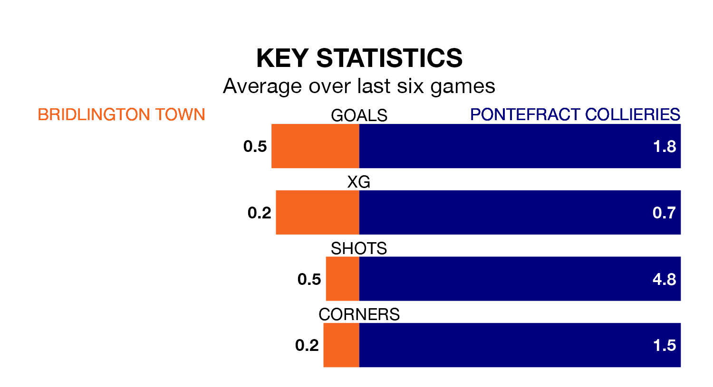

Bridlington Town are on a terrible run ahead of hosting Pontefract Collieries on Saturday, with just one point collected from their last six games.
Bridlington have picked up just one draw in their last six Northern Premier League Division One – East games, and face a Pontefract Collieries side whose last six games have brought three wins and two draws.
With 52 goals in 28 games so far this season, Pontefract Collieries are scoring more than average in the league with 1.9 goals per game. And they are conceding fewer than average, letting in 33 goals at a rate of 1.2 per game.
Bridlington, meanwhile, are below average scorers, with 1.2 goals per game, compared to a league average of 1.5. They have conceded 1.9 goals per game.
Town are 17th in the table after 31 games, of which they have won eight and drawn six, earning 30 points.
The visitors are 12 places ahead of the home side in fifth, with 14 wins and eight draws putting them on 50 points.
In the last five years, Bridlington and Pontefract Collieries have played each other on five occasions. Bridlington won one of them, Pontefract Collieries three, and they drew once.
On average, Bridlington scored 0.6 goals and Pontefract Collieries 2.2 in those matches.
Their last meeting was on March 9, when Pontefract Collieries won 3-0 at home.
Bridlington's last match was on March 16, a 2-0 loss against Hebburn Town.
Pontefract Collieries beat North Ferriby 4-1 last time out, also on March 16.
Updated: 10:19 (UTC), 22/03/24